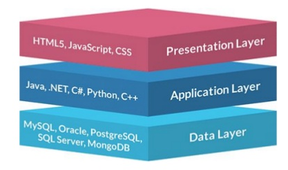

Arquitectures Web¶
Duració i criteris d'avaluació
Duració estimada: 4 hores
| Resultat d'aprenentatge | Criteris d'avaluació |
|---|---|
| 1. Selecciona les arquitectures i tecnologies de programació web en entorn servidor, analitzant les seves capacitats i característiques pròpies. | a) S'han caracteritzat i diferenciat els models d'execució de codi en el servidor i en el client Web. b) S'han reconegut els avantatges que proporciona la generació dinàmica de pàgines Web i les seues diferències amb la inclusió de sentències de guions a l'interior de les pàgines Web. c) S'han identificat els mecanismes d'execució de codi en els servidors Web. d) S'han reconegut les funcionalitats que aporten els servidors d'aplicacions i la seua integració amb els servidors Web. e) S'han identificat i caracteritzat els principals llenguatges i tecnologies relacionats amb la programació Web en entorn servidor. f) S'han verificat els mecanismes d'integració dels llenguatges de marques amb els llenguatges de programació en entorn servidor. g) S'han reconegut i avaluat les eines de programació en entorn servidor. |
Les arquitectures web defineixen la forma en què les pàgines d'un lloc web estan estructurades i enllaçades entre si. Les aplicacions web es basen en el model client-servidor.
Client / Servidor¶

El client inicia el procés amb una sol·licitud al servidor que genera un missatge de resposta. Ambdos es comuniquen utilitzant un protocol comú.
En les aplicacions web, els clients solen ser navegadors els que realitzen peticions(request normalment mitjançant el protocol GET mitjançant el port 80/443), i estos responen(response) amb la pàgina web sol·licitada o amb un missatge d’error.
La noves arquitectures substitueixen el servidor per un balancejador de càrrega de manera que N servidors donen resposta a M clients.
Pàgina web dinàmica¶
Si la pàgina web únicament conté HTML + CSS es considera una pàgina estàtica. Per a generar una pàgina dinàmica, on el contingut canvia, hui dia tenim dues alternatives:
- Utilitzar un llenguatge de servidor que genere el contingut, ja siga mitjançant l'accés a una BD o serveis externs.
- Utilitzar serveis REST de tercers invocats des de JS.

Les tecnologies utlitzades (i els perfils de desenvolupament associats) per a la generació de pàgines dinàmiques són:
| Perfil | Ferramenta | Tecnologia |
|---|---|---|
| Front-end / client | Navegador Web | HTML + CSS + JavaScript |
| Back-end / servidor | Servidor Web + BBDD | PHP, Python, Ruby, Java / JSP, .Net / .asp |
Perfil Full-stack
En les ofertes de treball quan fan referència a un Full-stack developer, estan buscant un perfil que domina tant el front-end com el back-end.
Single Page Application¶
Hui dia, gran part del desenvolupament web està mudant des d'una arquitectura web client-servidor clàssica on el client realitza una petició al backend, per una arquitectura SPA on el client guanya molt major pes i segueix una programació reactiva que accedeix a serveis remots REST que realitzen les operacions (comunicant-se mitjançant JSON).

Arquitectura de 3 capas¶
Cal distingir entre capes físiques (tier) i capes lògiques (layer).
Tier¶
Capa física d'una arquitectura suposa un nou element de maquinari separat físicament. Les capes físiques més allunyades del client estan més protegides, tant per firewalls com per VPN.
Exemple d'arquitectura en tres capes físiques (3 tier):
- Servidor Web
- Servidor d'Aplicacions
- Servidor de base de dades

Cluster en tiers
No confondre les capes amb la quantitat de servidors. Actualment es treballa amb arquitectures amb múltiples servidors en una mateixa capa física mitjançant un clúster, per a oferir tolerància a errors i escalabilitat horitzontal.
Layer¶

En canvi, les capes lògiques (layers) organitzen el codi respecte a la seua funcionalitat:
- Presentació
- Negoci / Aplicació / Procés
- Dades / Persistència
Com s'observa, cadascuna de les capes es pot implementar amb diferents llenguatges de programació i/o eines.

MVC¶

Model-View-Controller o Model-Vista-Controlador és un model d'arquitectura que separa les dades i la lògica de negoci respecte a la interfície d'usuari i el component encarregat de gestionar els esdeveniments i les comunicacions.
En separar els components en elements conceptuals permet reutilitzar el codi i millorar la seua organització i manteniment. Els seus elements són:
- Model: representa la informació i gestiona tots els accessos a aquesta, tant consultes com actualitzacions provinents, normalment, d'una base de dades. S'accedeix via el controlador.
- Controlador: Respon a les accions de l'usuari, i realitza peticions al model per a sol·licitar informació. Després de rebre la resposta del model, li envia les dades a la vista.
- Vista: Presenta a l'usuari de manera visual el model i les dades preparades pel controlador. L'usuari *interactura amb la vista i realitza noves peticions al controlador.
L'estudiarem en més detall en aprofundir en l'ús dels frameworks PHP.
Decisions de disseny¶
- Quina grandària té el projecte?
- Quins llenguatges de programació conec? Val la pena l'esforç d'aprendre un nou?
- Usaré eines de codi obert o eines propietàries? Quin és el cost d'utilitzar solucions comercials?
- Programaré l'aplicació jo només o formaré part d'un grup de programadors?
- Conte amb algun servidor web o gestor de base de dades disponible o puc decidir lliurement utilitzar el que crega necessari?
- Quin tipus de llicència aplicaré a l'aplicació que desenvolupe?
Herramientas¶
Servidor Web¶
Programari que rep peticions HTTP (GET, POST, DELETE, ...). Retorna el recurs sol·licitat (HTML, CSS, JS, JSON, imatges, etc...)
El producte més implantant és Apatxe Web Server (https://httpd.apache.org/), creat en 1995.
- Programari lliure i multiplataforma
- Sistema de mòduls dinàmics → PHP, Python, Perl
- Utilitza l'arxiu
.*htaccessper a la seua configuració
En l'actualitat, Apatxe està perdent mercat respecte a Nginx (https://www.nginx.com). Es tracta d'un producte més modern (2004) i que en determinats escenaris té millor rendiment que Apatxe.
- Comparativa servidors web: https://w3techs.com/technologies/history_overview/web_server/ms/q
Servidor d'Aplicacions¶
- Programari que ofereix serveis addicionals als d'un servidor web:
- Clustering
- Balanceig de càrrega
- Tolerància a fallades
- Tomcat (http://tomcat.apache.org/) és el servidor d'aplicacions open source i multiplataforma de referència per a una arquitectura Java.
- Contén un contenidor Web Java que interpreta Servlets i JSP.
Info
Tant els servidors web com els servidors d'aplicacions s'estudien en el mòdul de "Desplegament d'Aplicacions Web".
Llenguatges en el servidor¶
Les aplicacions que generen les pàgines web es programen en algun dels següents llenguatges:
- PHP: El més estés. Normalment s'executa com un mòdul al servidor. Es fàcil i barat trobar allotjaments que l'oferisquen.
- JSP: La versió de Java per a la web. Li cal un contenidor web.
- ASP.NET: Integrada en la plataforma de microsoft .NET
- Ruby: Molt apreciat per els desenvolupadors web.
- GO: La versió de google de phyton.
- Phyton: El més popular.
- NodeJS: Utilitza Javascript.
Criteris per apendre un llenguatge de programació
JavaEE¶
Java Enterprise Edition és la solució Java per al desenvolupament d'aplicacions *enterprise. Ofereix una arquitectura molt completa i complexa, escalable i tolerant a fallades. Plantejada per a aplicacions per a grans sistemes.

PHP¶
- Llenguatge de propòsit general dissenyat per al desenvolupament de pàgines web dinàmiques
- Al principi, llenguatge no tipat.
- Actualment en la versió 8. Es recomana almenys utilitzar una versió superior a la 7.0.
- Codi embegut en l'HTML
- Instruccions entre etiquetes
<?phpy?> - Per a generar codi dins de PHP, podem usar la instrucció
echo - Multitud de llibreries i frameworks:
- Laravel, Symfony, Codeigniter, Zend
La seua documentació és bastant completa: https://www.php.net/manual/es/index.php
El següent mapa mental mostra un resum dels seus elements:

Durant les següents unitats estudiarem PHP en profunditat.
Posada en marxa¶
Pera fer correr les aplicacions de servidor ens cal, com a mínim, un servidor web, l'interpret de php i un motor de base de dades. Hem de distinguir l'entorn de desenvolupament, on anem a programar i mantindre la nostra aplicació, de l'entorn de producció, on anem a executar-la. Normalment el primer depén de nosaltres mentre que el segon pot dependre de l'empresa on s'allotjarà la nostra web. Per a preparar el nostre entorn de desenvolupament podem optar per:
- Qualsevol solució LAMP (Linux, Apache, Mysql, PHP). Als que haurem d'afegir, una vegada els projectes es facen grans composer, git i les opcions de la part de client.
- Una màquina virtual ja configurada.
- Una solució docker.
La primera solució és senzilla d'implementar però no hauria de ser la nostra primera opció per:
- Estem possant en marxa en la nostra màquina una sèrie de servicis que normalment no fariem, baixant el rendiment de la màquina i obrint vulnerabilitats.
- Si treballem en grup, les instal·lacions i el funcionament no són iguals, depenen del sistema operatiu que té instal·lat cadascú. Allò que li funciona a ú pot ser no li funciona a un altre. Això és inevitable quan el projecte es complica i es perd molt de temps.
- Passa el mateix quan passem a l'entorn de producció.
La segona solució soluciona els dos primers problemes, doncs tots els desenvolupadors poden tindre virtualitzada, la mateixa màquina. Encara que si la màquina no la fem nosaltres sinó que utilitzem alguna ja configurada (vagrant) o si ens cal instal·lar alguna cosa més, ho hauria de fer tot l'equip.
Així i tot, tindriem les següents desaventatges:
- A l'instal·lar una maquina virtual sencera ocupa recursos del sistema.
- La màquina instal·la més coses de les necessàries habitualment.
- No reprodueix l'entorn de producció.
Pot ser molt útil, per exemple, quan la fem servir per desenvolupar en un framework, que ja ve configurat per fer-lo funcionar inmediatament i amb totes les característiques instal·lades.
La tercera opció té les següents característiques:
- Al principi és més difícil de possar en funcionamet ja que calen coneixements de docker.
- Tots els desenvolupadors comparteixen entorn encara que utilitzen màquines o sistemes operatius diferents.
- Si hi ha algun canvi de configuració de l'entorn és fácilment transladable a tots els desenvolupadors.
- Es poden crear tants entorns de desenvolupament com projectes diferents hi hajen.
- Els contenidors ocupen pocs recursos.
- Els projectes es poden possar en producció utilitzan una solució docker de manera inmediata.
XAMPP¶
XAMPP (https://www.apachefriends.org/es/index.html) és una distribució composta amb el programari necessari per a desenvolupar en entorn servidor. Es compon de les següents eines sobre la base de les seues sigles:
- X per al sistema operatiu (d'aquí ve que es conega altrament com LAMP o WAMP).
- A per a Apatxe.
- M per a MySQL / MariaDB. També inclou phpMyAdmin per a l'administració de la base de dades des d'una interfície web.
- P per a PHP.
- l'última P per a Perl.
Des de la pròpia pàgina es pot descarregar l'arxiu executable per al sistema operatiu del nostre ordinador. Es recomana llegir la FAQ de cada sistema operatiu amb instruccions per a la seua posada en marxa.
XAMPP en Windows
Si treballes amb el teu propi ordinador, XAMPP és una solució més senzilla que Docker, sobretot si treballes amb Windows com a sistema operatiu.
Docker¶
Docker (https://www.docker.com) és un gestor de contenidors, considerant un contenidor com un mètode de virtualització del sistema operatiu.
L'ús de contenidors requereix menys recursos que una màquina virtual, per tant, el seu llançament i detenció són més ràpids que les màquines virtuals.
Així doncs, Docker permet crear, provar i implementar aplicacions ràpidament, a partir d'una sèrie de plantilles que es coneixen com a imatges de Docker.
Per a això és necessari tindre instal·lat Docker Desktop (https://www.docker.com/products/docker-desktop) en els nostres entorns de desenvolupament (el qual ja inclou en nucli de Docker i l'eina docker compose). Per a instal·lar-ho en Windows, és necessari instal·lar prèviament WSL 2, el qual és un subsistema de Linux dins de Windows.
Al llarg del curs anirem creant diferents contenidors amb els serveis necessaris, de manera que cada vegada només treballem amb el programari mínim.
Versions
Al llarg del curs usarem PHP 8.0. Respecte a Docker, per a escriure les anotacions hem utilitzat la versio 20.10 i la versio 2.19 de docker compose. Finalment, la versió de Docker Desktop que hem utilitzat és la 4.0.
Instal·lació de docker¶
La instal·lació de docker dependrà del sistema operatiu que estem utilitzant. Ací anem a vore la que efecturan els que utilitzen linux, amb el sistema operatiu linux-mint o ubuntu , que és el que ve instal·lat en les imatges suministrades. Per a mac o windows s'haurà de mirar la pàgina web de docker
Ens donem privilegis
sudo su
Utilitzant els repositoris de docker l'instal·lem:
echo "deb [arch=amd64] https://download.docker.com/linux/ubuntu focal stable" | tee /etc/apt/sources.list.d/docker.list
curl -fsSL https://download.docker.com/linux/ubuntu/gpg | apt-key add -
apt update
apt install docker-ce docker-ce-cli containerd.io pigz
Donem permisos a l'usuari afegint-lo al grup de docker
usermod -aG docker $USER
També haurem d'instal·lar el docker-compose
curl -L "https://github.com/docker/compose/releases/download/1.26.1/docker-compose-$(uname -s)-$(uname -m)" -o /usr/local/bin/docker-compose
chmod +x /usr/local/bin/docker-compose
I provem
docker --version
Faltarà engegar el servei de docker per a poder executar contenidors
sudo systemctl start docker.service
Plantilla Servidor Web + PHP¶
Docker es basa en l'ús d'imatges per a crear contenidors. Docker Compose simplifica el treball amb múltiples contenidors, i per això, per a facilitar l'arranc, ens centrarem en Docker Compose utilitzant una plantilla que únicament contindrà com a serveis Nginx i PHP.
Per a això, emplenarem l'arxiu docker-compose.yaml amb:
# Services
services:
nginx:
image: nginx:1.19
ports:
- 80:80
volumes:
- ./src:/var/www/php
- ./.docker/nginx/conf.d:/etc/nginx/conf.d # cargamos la configuración de un fichero externo
depends_on:
- php # enlazamos nginx con php
php:
image: php:8.0-fpm
working_dir: /var/www/php
volumes:
- ./src:/var/www/php
Dins de la carpeta que continga aquest arxiu, hem de crear una carpeta src on col·locarem el nostre codi font. Per a facilitar la posada en marxa, teniu la plantilla de Nginx/PHP disponible per a la seua descàrrega.
Quan estiguem llestos, llançarem el servei mitjançant:
docker-compose up -d
Si volem veure el contingut dels arxius de log del servei utilitzarem:
docker-compose logs -f
Per a copiar un arxiu des del nostre sistema a l'interior del contenidor:
docker cp ./miFichero idContenedor:/tmp
I a l'inrevés, si volem consultar un arxiu contingut dins d'un contenidor, el copiarem al nostre sistema:
docker cp idContenedor:/tmp/archivoAConsultar.txt ./
Finalment, si volem accedir a un terminal interactiu dins del contenidor:
docker exec -it nombreContenedor bash
Altres comandos que podem arribar a utilitzar són:
docker ps: Veure els contenidors que es estan executantdocker ps -a: Veure tots els contenidorsdocker start nombreContenedor: Arrancar un contenidordocker images: Veure les imatges que tenim descarregades
Una altra forma més senzilla per a llançar de nou els contenidors i gestionar-los una vegada creats és utilitzar la interfície gràfica que ofereix Docker Desktop:

Docker stack
Existeixen diverses opcions mitjançant Docker que ofereixen solucions completes i empaquetes per a tot el stack de desenvolupament. En posteriors sessions utilitzarem tant Devilbox (http://devilbox.org) com Laradock (https://laradock.io)
Però vull saver com funciona...
En el mòdul de Desplegament d'aplicacions estudiareu en profunditat, a més de Docker, Apatxe i altres serveis que ens serviran d'ajuda per al desenvolupament en entorn servidor.
Entorn de desenvolupament¶
En este curso utilitzarem PHP Storm (https://www.jetbrains.com/phpstorm/) com a entorn de desenvolupament. Existixen altres alternatives, com Visual Studio Code (https://code.visualstudio.com).
Hola mon¶
I com no, el nostre primer exemple serà un Hola Món en PHP.
Si nomenem l'arxiu com index.php, en accedir a http://localhost automàticament carregarà el resultat:
<!DOCTYPE html>
<html lang="es">
<head>
<meta charset="UTF-8">
<meta name="viewport" content="width=device-width, initial-scale=1.0">
<title>Hola Món</title>
</head>
<body>
<?php
echo "Hola Món";
?>
</body>
</html>
Referències¶
- Curs de introducció a Docker, per Sergi García Barea : https://sergarb1.github.io/CursoIntroduccionADocker/
- Article Arquitectures Web i sa evolució
Activitats¶
-
Cerca en internet quals són els tres frameworks PHP més utilitzats, i indica:
- Nom i URL
- Any de creació
- Última versió
-
Cerca tres ofertes de treball de desenvolupament de programari en Infojobs a la província d'Alacant que citen PHP i anota:
- Empresa + lloc + frameworks PHP + requeriments + sou + enllaç a l'oferta.
-
Una vegada arrancat el servei PHP (mitjançant XAMPP o Docker), crea l'arxiu
info.phpi afig el següent fragment de codi:Anota els valors de:<?php phpinfo() ?>- Versió de PHP
- Loaded Configuration File
memory_limitDOCUMENT_ROOT
-
Obri l'arxiu
php.ini-productionque està dins del contenidor (pots esbrinar la ruta a partir de la propietat Configuration File (php.ini) Path) i indica per a què serveixen les següents propietats i quins valors contenen:file_uploadsmax_execution_timeshort_open_tag
php.ini
Es el archivo de configuración de PHP, y en toda instalación vienen dos plantillas (
php.ini-developmentyphp.ini-production) para que elijamos los valores más acordes a nuestro proyecto y creemos nuestro archivo propio dephp.ini.